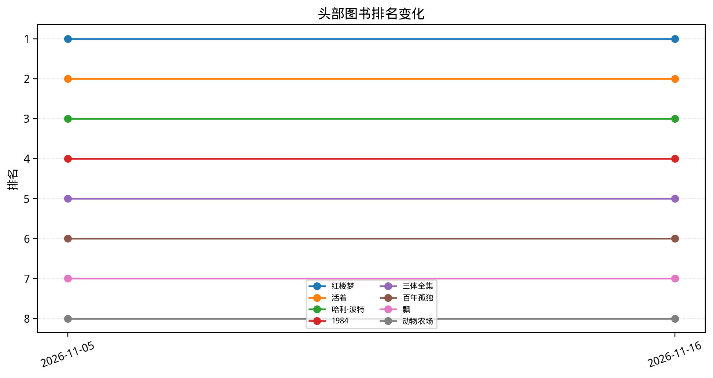
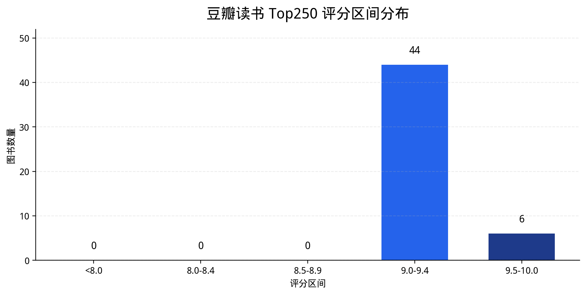

数据总览
评分区间分布
国家/地区分布
题材分布
核心结论
历史趋势
每次运行 analyze 会把当天数据加入 data/snapshots，重复运行会形成长期趋势。


短评文本分析
中文词云
情感分布

主题模型
多维统计

图书检索
| 排名 | 书名 | 作者 | 出版社 | 国家 | 题材 | 评分 | 评价人数 | 短评 |
|---|
相似高分书推荐
基于书名、作者、出版社、短评、国家和题材的 TF-IDF 余弦相似度
| 推荐图书 | 评分 | 相似度 |
|---|
分析图表



抓取、清洗、文本挖掘、趋势与相似推荐 · 生成时间：
每次运行 analyze 会把当天数据加入 data/snapshots，重复运行会形成长期趋势。

| 排名 | 书名 | 作者 | 出版社 | 国家 | 题材 | 评分 | 评价人数 | 短评 |
|---|
| 推荐图书 | 评分 | 相似度 |
|---|
